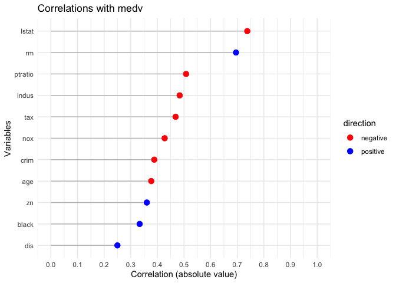
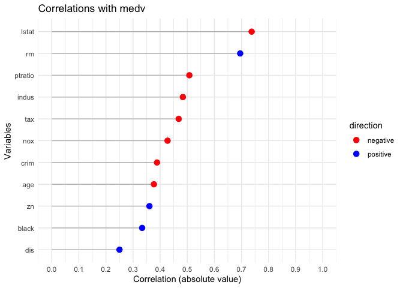

rxy
rxy is an R package for analyzing correlations between a dependent variable and multiple independent variables. It includes methods for: - Printing correlation tables with statistical significance. - Plotting correlations with color-coded visualizations. - Summarizing correlations with detailed summaries.
Installation
To install the package from source, use the following:
devtools::install(“path/to/rxy”)
Usage
Analyze Correlations
Here’s how to use rxy with the Boston dataset from the MASS package:
Print Results
Display the correlation results:
print(result)## Correlations of medv with
## variable r p sigif
## lstat -0.7376627 5.081103e-88 ***
## rm 0.6953599 2.487229e-74 ***
## ptratio -0.5077867 1.609509e-34 ***
## indus -0.4837252 4.900260e-31 ***
## tax -0.4685359 5.637734e-29 ***
## nox -0.4273208 7.065042e-24 ***
## crim -0.3883046 1.173987e-19 ***
## age -0.3769546 1.569982e-18 ***
## zn 0.3604453 5.713584e-17 ***
## black 0.3334608 1.318113e-14 ***
## dis 0.2499287 1.206612e-08 ***Visualize Results
Create a plot of the absolute correlations:
plot(result) 

Summarize Results
Summarize the correlations with statistical significance:
summary(result)## Correlating medv with crim zn indus nox rm age dis tax ptratio black lstat
## The median absolute correlation was 0.427 with a range from -0.738 to 0.695
## 11 out of 11 variables were significant at the p < 0.05 level.Features
Automatic correlation analysis for numeric variables. Customizable visualizations to understand relationships. Statistical summaries for in-depth analysis.